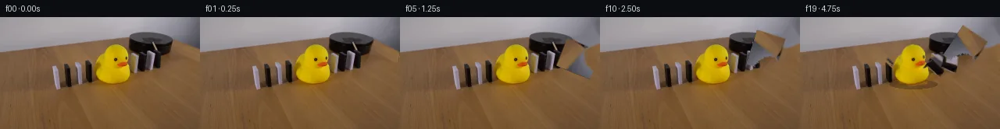

![首帧]()

Round 00
2026-11-06T07:03:15.149903+00:00像素候选变化代码 +254/−0inspection 更新
pixels 4b0b6b8825788cfd · code c49d1780162e2cba
查看本轮 generate.py 真实 diff
--- previous/generate.py
+++ current/generate.py
@@ -0,0 +1,254 @@
+"""PixelWorld-Text case 0055 generator.
+
+Scene: a wooden stick attached to a black platform rotates clockwise and
+knocks the first domino; the first two dominoes tip down the line and the
+yellow duck begins to rock. All motion is rigid 2D rotation of sprites cut
+from frame 0, composited over cv2-inpainted background plates.
+Frame 00 is copied byte-exact from first_frame.png.
+"""
+from pathlib import Path
+import numpy as np
+import cv2
+from PIL import Image, ImageDraw
+from scipy import ndimage
+from artifact_io import save
+
+CASE = Path(__file__).parent
+TMP = CASE / '.tmp'
+TMP.mkdir(exist_ok=True)
+
+# ---------------------------------------------------------------- geometry
+W, H = 256, 144
+STICK_PIVOT = (225.0, 39.5)
+STICK_A0 = -44.0 # screen-coordinate angle at frame 0
+TILE_A_PIVOT = (201.0, 66.0)
+TILE_B_PIVOT = (184.0, 69.5)
+DUCK_PIVOT = (145.0, 84.0)
+
+# ---------------------------------------------------------------- load
+frame0 = np.array(Image.open(CASE / 'first_frame.png').convert('RGB'))
+assert frame0.shape == (H, W, 3) and frame0.dtype == np.uint8
+r = frame0[..., 0].astype(int)
+g = frame0[..., 1].astype(int)
+b = frame0[..., 2].astype(int)
+K = (r < 95) & (g < 95) & (b < 100)
+
+
+def poly(points):
+ return np.array(points, np.int32)
+
+
+def poly_mask(points):
+ m = np.zeros((H, W), np.uint8)
+ cv2.fillPoly(m, [poly(points)], 1)
+ return m.astype(bool)
+
+
+def component(mask):
+ """Largest connected component, holes filled."""
+ lab, n = ndimage.label(mask)
+ if n == 0:
+ return mask
+ sizes = ndimage.sum(np.ones_like(lab), lab, range(1, n + 1))
+ main = lab == (int(np.argmax(sizes)) + 1)
+ return ndimage.binary_fill_holes(main)
+
+
+def make_stick_mask():
+ zone = poly_mask([(218, 9), (256, 9), (256, 54), (218, 54)])
+ wood = (r >= b + 12) & (g >= b) & (r > 90) & (r < 175)
+ dark = (r < 115) & (g < 115) & (b < 125)
+ return component(zone & (wood | dark))
+
+
+def make_tile_mask(points):
+ return component(K & poly_mask(points))
+
+
+def make_duck_mask():
+ yellow = (r > 150) & (g > 110) & (b < 120) & (r - b > 60)
+ orange = (r > 140) & (g > 60) & (g < 140) & (b < 90) & (r - g > 30)
+ region = np.zeros((H, W), bool)
+ region[33:88, 110:180] = True
+ colored = (yellow | orange) & region
+ lab, n = ndimage.label(colored)
+ sizes = ndimage.sum(np.ones_like(lab), lab, range(1, n + 1))
+ main = lab == (int(np.argmax(sizes)) + 1)
+ near = ndimage.binary_dilation(main, iterations=3)
+ m = (colored & near) | main
+ holes = ndimage.binary_fill_holes(main) & ~main
+ m |= (K & ndimage.binary_dilation(holes, iterations=1) & region)
+ return m
+
+
+stick_mask = make_stick_mask()
+# tile A: first domino (right), cap y46-50 x196-215, side x197-206 to y66
+tile_a_mask = make_tile_mask([(193, 46), (217, 46), (209, 67), (193, 67)])
+# tile B: second domino, cap x171-193, side x177-192 to y69
… diff truncated; 167 more lines …